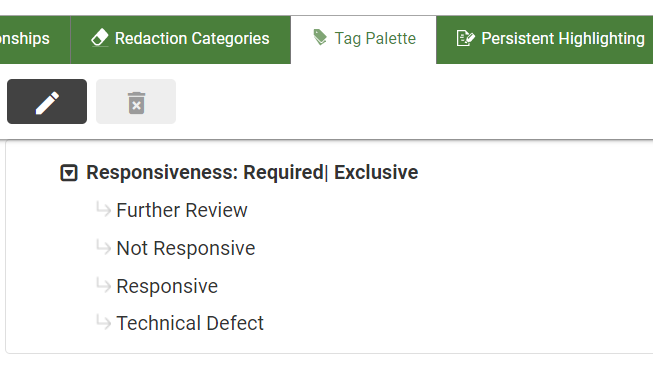
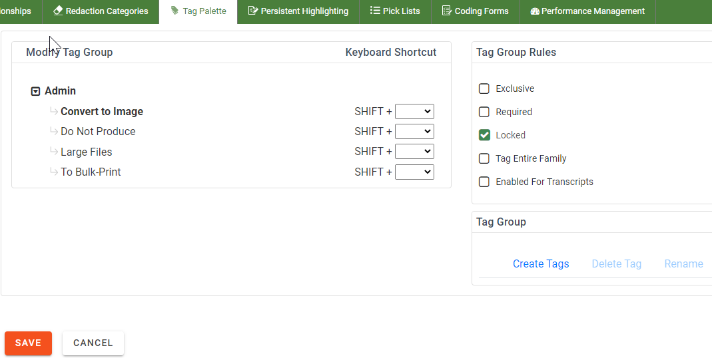
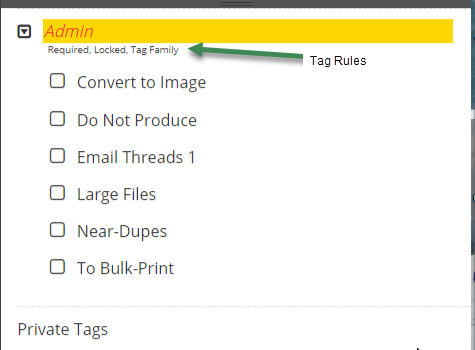
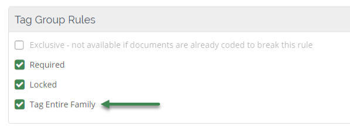

Work with Tag Options
Once you have created the tags for your review case, there are numerous options that can be assigned to your tag.
Assign Keyboard Shortcuts to Tags
You can assign keyboard shortcuts to tags in order to further streamline the process of reviewing documents. After a keyboard shortcut has been assigned, users can simply press the keys associated with that shortcut to apply the tag to a document.
To assign a keyboard shortcut to a tag:
-
In , click a case card.

-
Click the Enter Case button.

The Visual Search dashboard appears.

-
On the left side of the Case View page, click the Case Settings icon. The case settings tabs display in a ribbon bar at the top of the screen.
- Click the Tag Palette tab. The Tag Palette screen displays.
-
Select a pre-defined tag group from the left-panel that contains the tags to which you want to assign shortcuts.
|

|
Note: If you want to sort the tag palettes list, click  to display the sort menu and select an option. to display the sort menu and select an option.
|
-
The selected tag group appears, along with its associated tags. Select the Edit  icon above the tag group to make changes.
icon above the tag group to make changes.

-
Define shortcut keys for any tags in the group. By default, the shortcut combination consists of the SHIFT button plus a key of your choosing. Select the key from a drop-down menu. Keys that have been applied to other tags display as grayed out and cannot be selected.

- Follow the steps to assign shortcut keys to other tags in the tag group currently being modified. When finished, click Save.
- Proceed to assign shortcut keys to tags in other tag groups, following the above step.
Tag Rules
The following rules can be applied to document tag groups.
|
Exclusive
|
Only one tag in the group can be applied to a document.
|
|
Required
|
At least one tag in the group must be applied to all documents in a batch before a batch can be marked complete.
|
|
Locked
|
Maintain the current state of tags in the group. That is, if a tag in the group has been applied to documents, it remains in this state. If a tag has not been applied to documents, it cannot be applied.
|
|
Tag Entire Family
|
When a tag in the group is applied to a document, the tag will be applied to the selected document and its relatives (all generations of
parents, children, siblings). See Tags and Related Documents.
|
|
Enabled for Transcripts
|
Selecting this rule allows the tag group to be used within the Transcripts feature. See Work with Transcripts.
|
Rules are presented in the Coding Form, in the Tag Palette section, under the tag group name as shown in this example.

Tags and Related Documents
Documents may be related to one another, such as an email and attachments.
Your administrator defines document relationships in a BEGATTACH field;
family members for a selected document are shown in the Relationships
panel. For more information about relationships, see Overview: Relationships.
Your administrator may define tag groups with the Tag Entire Family rule, meaning
if you apply a tag in the group, it will be applied to all related documents.
Whether a tag is configured with this rule depends on the nature of the
tag and guidelines for your case.

For example, a tag for identifying illegible documents
would in all likelihood apply only to individual documents. A tag for
identifying emails might apply to
a document and its relatives.
Related Topics
Overview: Tags
Manage Tag Palettes
Use Keyboard Shortcuts To Review Documents